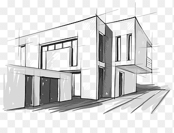

Architectural drawing is the visual language architects use to plan, communicate, and execute their designs. These drawings include floor plans, elevations, sections, and perspectives, and are essential for construction, client approval, and design development. Historically it was done by hand,but many architectural drawings are now created using CAD (Computer-Aided Design) software. Mastering architectural drawing requires precision, creativity, and a deep understanding of spatial relationships, scale, and measurements.
